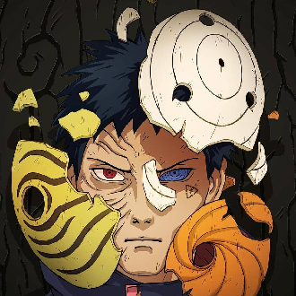
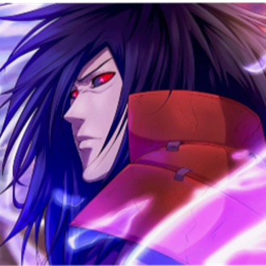
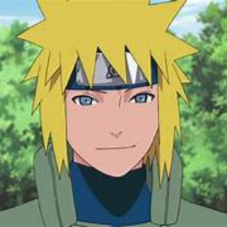
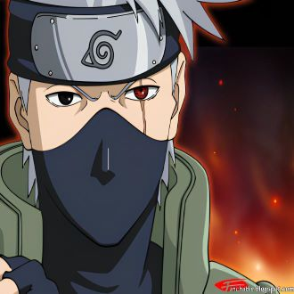

-
Obito Uchiha
Descrição
Obito Uchiha foi um membro do Clã Uchiha que, após ser dado como morto, retornou sob o pseudônimo de Tobi e se tornou um dos principais antagonistas da série. Inicialmente um ninja gentil e idealista, Obito sofreu uma transformação após uma tragédia pessoal, adotando uma visão distorcida de paz. Ele é um mestre do Sharingan e eventualmente desperta o Mangekyō Sharingan, ganhando habilidades poderosas como o Kamui, que lhe permite manipular espaço-tempo. Obito também demonstra grande habilidade em genjutsu e ninjutsu. Seu legado é marcado por sua complexa jornada de redenção e impacto duradouro na Quarta Grande Guerra Ninja, onde suas ações desafiaram e moldaram o destino do mundo ninja, e um grande seguidor dos planos de Madara Uchiha.
-
Madara Uchiha
Descrição
Madara Uchiha foi cofundador da Vila da Folha (Konoha) junto com Hashirama Senju, mas divergências sobre a forma de alcançar a paz o levaram a se afastar e se tornar um antagonista. Ele é um dos ninjas mais poderosos, mestre do Sharingan, Mangekyō Sharingan e Rinnegan, além de ser habilidoso em combate corpo a corpo, genjutsu e ninjutsu, destacando-se pelo uso do Susanoo. Madara simboliza a tragédia e a grandeza do Clã Uchiha, influenciando profundamente a história de Konoha e o mundo ninja com sua visão distorcida de paz e sua busca incessante pelo poder.
-
Sasuke Uchiha

Descrição
Sasuke Uchiha, último sobrevivente do massacre do Clã Uchiha, embarca em uma jornada de vingança contra seu irmão Itachi, que ele acredita ser o responsável pela tragédia. Ao longo da série, Sasuke se torna um dos ninjas mais poderosos, dominando o Sharingan, Mangekyō Sharingan e eventualmente o Rinnegan. Ele é hábil em taijutsu, genjutsu e ninjutsu, e sua técnica Chidori é uma de suas marcas registradas. Sua rivalidade e amizade com Naruto Uzumaki são centrais em sua história, influenciando suas escolhas e crescimento. O legado de Sasuke é complexo, marcado por sua luta interna entre vingança e redenção. Suas ações e decisões impactam profundamente a história de Konoha e o destino do mundo ninja, refletindo seu papel como anti-herói e eventual protetor da vila.
-
Naruto Uzumaki

Descrição
Naruto Uzumaki, inicialmente um órfão solitário e rejeitado pela vila, sonha em se tornar o Hokage para ganhar reconhecimento e respeito. Ele é filho de Minato Namikaze, o Quarto Hokage, e de Kushina Uzumaki. Ao longo da série, Naruto se torna um dos ninjas mais poderosos, graças à sua determinação, ao poder da Raposa de Nove Caudas (Kurama) selada dentro dele, e ao treinamento rigoroso. Naruto domina técnicas como o Rasengan, criado por seu pai, e o Modo Sábio, além de desenvolver o poder do Modo Kurama e a habilidade de usar o chakra de todas as Bestas com Cauda. Sua amizade e rivalidade com Sasuke Uchiha são fundamentais para sua jornada, motivando seu crescimento e suas ações. A história de Naruto também está ligada a Obito Uchiha, cujas ações desencadearam eventos que marcaram sua vida, como o ataque de Kurama à vila no dia de seu nascimento. O legado de Naruto é o de um herói que trouxe paz e unidade ao mundo ninja, superando preconceitos e adversidades, e eventualmente alcançando seu sonho de se tornar o Sétimo Hokage de Konoha.
-
Minato Namikase
Descrição
Minato Namikaze, conhecido como o Quarto Hokage de Konoha, é celebrado como um dos ninjas mais talentosos e poderosos de todos os tempos. Sua habilidade com o Jutsu do Deus Voador do Trovão, que lhe permite se teletransportar instantaneamente, e a criação do Rasengan, são marcas de seu gênio. Minato é também o pai de Naruto Uzumaki e mestre de Kakashi Hatake e Obito Uchiha. Durante o ataque devastador orquestrado por Obito, Minato selou a Raposa de Nove Caudas (Kurama) dentro de Naruto para proteger a vila. Seu sacrifício para salvar Konoha e seu filho é um testemunho de seu caráter heroico. O legado de Minato é profundo, influenciando tanto a história da vila quanto o destino de Naruto, cujo sonho de se tornar Hokage foi inspirado pelo exemplo de seu pai. Minato é lembrado como um líder visionário e um símbolo de coragem e sacrifício.
-
Kakashi Hatake
Descrição
Kakashi Hatake, conhecido como "Ninja Copiador Kakashi" e "Kakashi do Sharingan", é um dos ninjas mais habilidosos de Konoha. Ele foi discípulo de Minato Namikaze, o Quarto Hokage, e mestre de Naruto Uzumaki, Sasuke Uchiha. Kakashi é reconhecido por sua maestria no uso do Sharingan, adquirido de Obito durante a Terceira Grande Guerra Ninja. Sua técnica característica é o Chidori, e ele é conhecido por sua habilidade de copiar e adaptar técnicas de seus oponentes. Ao longo da série, Kakashi desempenha um papel crucial no treinamento de Naruto e Sasuke, guiando-os em suas jornadas e desafios. Sua conexão com Obito é marcada por tragédia e redenção, especialmente após Obito ressurgir como vilão. O legado de Kakashi como um dos ninjas mais sábios e habilidosos de Konoha é um exemplo de sua dedicação à vila e aos seus alunos, influenciando profundamente a vida de Naruto e Sasuke através de seus ensinamentos e experiências compartilhadas.